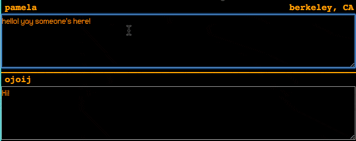
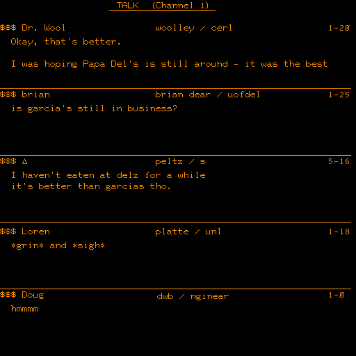
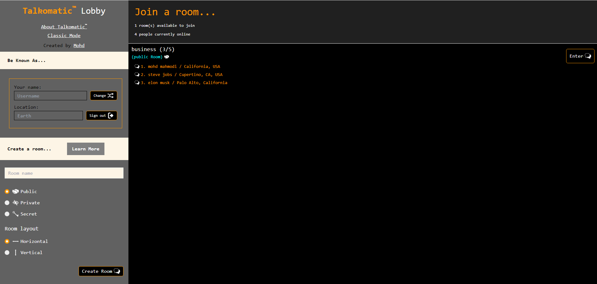
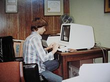

Talkomatic was one of the earliest online chat systems, created in 1973 by Doug Brown and David R. Woolley at the University of Illinois. It was developed on the PLATO system, an early computer-based education platform that ran on mainframe computers. Talkomatic allowed real-time text communication among small groups, displaying each user's messages in their own section of the screen. This made it unique, as messages appeared letter-by-letter as they were typed, creating a sense of real-time interaction that was groundbreaking for its time.
The system was designed to facilitate group discussions and collaboration, with a focus on educational and research settings. Users could join one of six available channels, each capable of hosting up to five participants. The interface was text-based, with each user's messages appearing in a designated area of the screen, making it easy to follow the conversation.
Talkomatic was built using the TUTOR programming language, which was specifically designed for the PLATO system. The system relied on the PLATO's high-speed network and time-sharing capabilities to enable real-time communication among users. Each user's input was transmitted to the central mainframe, processed, and then distributed to the other participants in the chat room.
One of the key innovations of Talkomatic was its ability to display messages character-by-character as they were typed, rather than waiting for the user to press "send" or "enter." This feature, known as "character-at-a-time transmission," created a more natural and engaging conversation flow, as users could see each other's messages forming in real-time.
Talkomatic quickly gained popularity among PLATO users, who were drawn to its innovative real-time communication features. The system became a hub for social interaction, fostering a sense of community among users across different locations. It was particularly popular among students and researchers, who used it for both academic discussions and casual conversations.
The success of Talkomatic on the PLATO system inspired the development of similar chat systems on other platforms, both within the PLATO community and beyond. It laid the groundwork for future online communication tools, demonstrating the potential for real-time, text-based interaction in a digital environment.
Despite its historical significance, Talkomatic's reach was limited by the fact that the PLATO system was primarily accessible to academic and research institutions. However, its influence can be seen in the subsequent development of chat systems and online communities that emerged as personal computers and the internet became more widely available.
In 2014, Doug Brown and David R. Woolley, the original creators of Talkomatic, launched a web-based version of the system, aiming to recreate the experience for a new generation of users. The web version was built using modern web technologies and was designed to closely mimic the original PLATO interface.
However, the web-based Talkomatic faced several challenges, including technical issues and difficulties in moderating user behavior. The open nature of the internet made it harder to maintain the same level of community and decorum that had been possible on the closed PLATO system. As a result, the web version of Talkomatic was eventually taken offline in June 2024.
Despite the challenges faced by the web-based revival, Mohd Mahomdi, a developer and Talkomatic enthusiast, decided to recreate Talkomatic from scratch based on the original web design. Mohd's version addressed the issues faced by the previous web-based Talkomatic, implementing effective moderation tools to ensure a safer and more inclusive user experience. The new Talkomatic, built with modern web technologies, offers improved performance and a better overall user experience compared to its predecessor.
The legacy of Talkomatic lives on through its impact on the development of online communication and its role in shaping early digital communities. It remains an important part of the history of computing and a testament to the innovative spirit of its creators. The latest iteration of Talkomatic, developed by Mohd Mahomdi, ensures that this groundbreaking system continues to inspire and connect users in the modern era.
